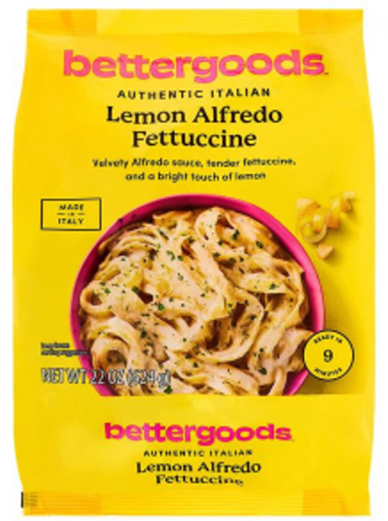

| Latest · All active · Archive · Subscribe → | 🛡️ FOOD RECALL DIGEST Walmart frozen fettuccine recalled for Listeria Thu, Oct 1, 2026 · new since Sep 30 | 1 NEW TODAY | | 1 GERMS & TOXINS | | 0 ALLERGENS | | 369 OPEN NOW |
| | Expand all · Collapse all | | | ▸In this issue1 new recall, most serious first  | HIGH RISK bettergoods Lemon Alfredo Fettuccine Listeria · Walmart stores nationwide · all lots · Don’t eat |
| | |
| | | ▸Recall details ▸HIGH RISK · FDA · Oct 1 · expands Sep 15 recall · bettergoods Lemon Alfredo Fettuccine| bettergoods Authentic Italian Lemon Alfredo Fettuccine | | | ⚠️ | PROBLEM Possible Listeria monocytogenes, found by Washington and Florida state agriculture sampling. Listeria is most dangerous for pregnant women, young children, older adults and people with weak immune systems. | | 🔍 | LOOK FOR | Frozen, 22 oz yellow plastic package |
| ALL lot codes are now recalled (the Sep 15 recall covered only lots L6079C and L6080C, expiration 09/19/2027 and 09/20/2027) |
| | 🩺 | ILLNESSES None reported to date. | | 📍 | WHERE SOLD Walmart stores nationwide (FDA notice). | | ➜ Don’t eat it. Return it to the store for a full refund. Questions: sales@giasfoods.com. |
| |
|
| | |
| | | ▸Updates | ↻ Alfalfa sprout outbreak (Berlin Seeds seed lot SAL2‑24JB): was 55 sick in 15 states, 4 hospitalized (Sep 24) → now 76 sick in 16 states, 6 hospitalized, no deaths (FDA, Oct 1). States with cases: FL, IN, IA, KS, MI, MN, NH, NY, NC, ND, OR, PA, SC, SD, WA, WI. | | ↻ Guanciale pork jowl (Prime Line / Ferrarini, lot 263311US): was 7 named stores in FL and NJ → now 9 stores in FL, NJ and NY. USDA list 020‑2026 (as of Sep 30) adds Violante’s Meat Market, 105 Franklin Ave, Nutley, NJ and Angelina Paris, 1050 Sixth Ave, New York, NY. |
| | | ▸Still activeOngoing recalls and outbreaks with illness risk | | Jalapeños from Sinaloa, Mexico (Coast Citrus) Salmonella Javiana · 431 sick, 32 states, 57 hospitalized (Aug 21) | | | | Freshness Guaranteed (Walmart) |
| | | | |
➜ Throw away recalled jalapeños and products made with them |
| | | Broccoli sprouts, Evergreen Fresh Sprouts (ID) Salmonella · 32 sick in ID, MN, MT, OR, UT, WA; 3 hospitalized (Sep 24) Expiration dates 9/7, 9/9, 9/11, 9/14, 9/16. Sold in ID, MT and WA groceries and restaurants. ➜ Throw away |
| | | Alfalfa sprouts & sprout mixes E. coli + Salmonella · 76 sick, 16 states, 6 hospitalized (Oct 1) ➜ Throw away |
| | | Guanciale pork jowl, Prime Line / Ferrarini Listeria · no illnesses reported Lot 263311US, use by 05.16.27. 9 named stores in FL, NJ and NY, see Store lists below. ➜ Throw away |
| | | Graziers raw milk cheese E. coli O26 · 13 sick, 9 states, 8 hospitalized, 3 with kidney failure (CDC, Sep 25) ➜ Do not eat |
| | | Outbreaks, source not found yet 7 open investigations · Listeria (44, 11, 11 cases) · E. coli O157:H7 (38) · Salmonella Newport (116), Oranienburg (99), I 4,[5],12:i:- (43) ➜ Watch for updates |
| 358 FDA + 11 USDA recalls still open, however old, with 514 stores named by USDA. |
| | | | ▸Store listsTap an address for directions ▸Guanciale pork jowl, Prime Line / Ferrarini9 stores · USDA retail lists 019‑2026 (as of Sep 15) and 020‑2026 (as of Sep 30) · tap to hide FLORIDA · 6 | NEW JERSEY · 2 | NEW YORK · 1 | | |
| ▸Star Meat Delivery, raw pork, beef & goat53 stores in 14 states · USDA retail list as of Sep 28, 2026 · tap to show ALABAMA · 4 | ARKANSAS · 1 | FLORIDA · 2 | GEORGIA · 10 Ab & C Oriental Store
590 Carl Vinson Pkwy, Warner Robins | African Market
946 E.G. Miles Pkwy, Hinesville | Asian Fresh Market
1806 Russell Pkwy, Warner Robins | Best Wholesales Place
65 Crestridge Dr, Suwanee | Chun Ching Oriental Market
418 NW 8th Ave, Gainesville | Exxon Food Mart
930 Indian Trail Rd, Lilburn | Nafii Market
552 W Oglethorpe Hwy, Hinesville | The Point Market
612 Sibley Ave, Union Point | Robins Fresh Seafood & Grocery
115 Margie Dr, Warner Robins | Save Depot
3925 Venture Dr, Duluth |
| KENTUCKY · 6 | MISSISSIPPI · 1 | MISSOURI · 2 | NORTH CAROLINA · 7 | OKLAHOMA · 3 | PENNSYLVANIA · 1 | SOUTH CAROLINA · 7 | TENNESSEE · 7 | TEXAS · 1 | VIRGINIA · 1 | | |
|
| | | 🛡️ Food Recall Digest Sources: FDA recalls · USDA FSIS · FDA outbreaks · FDA sprout outbreak
Audited: every fact checked against FDA, USDA FSIS and CDC pages on Oct 1, 2026.
✓ Confirmed = named in the official notice or USDA store list. Lead = sells this brand; not confirmed for recalled lots.
Independent summary of public FDA, USDA and CDC data. Not an official government notice. Not medical advice; if you ate a recalled product and feel sick, contact a doctor.
foodrecalldigest@gmail.com
Website · Past digests · Subscribe · Reply “unsubscribe” to stop |
|